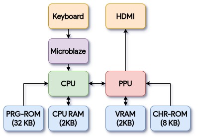
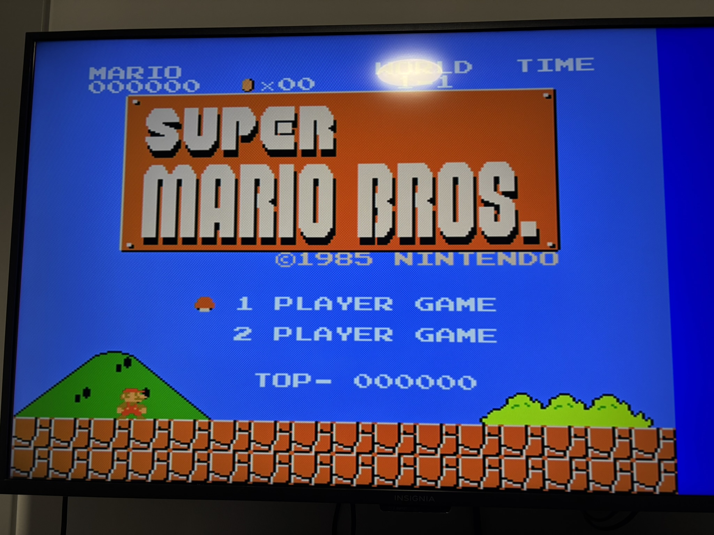
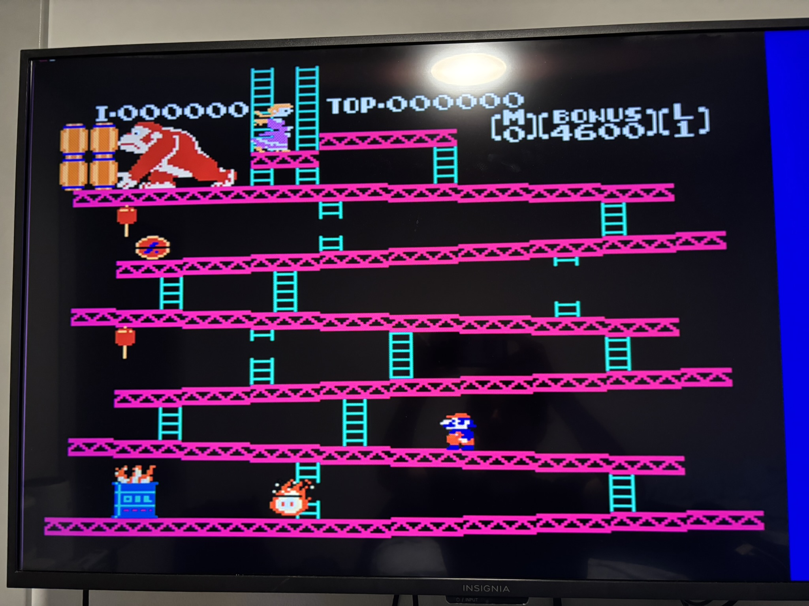

This project implements a Nintendo Entertainment System emulator in hardware, running on the Urbana FPGA board. Rather than emulating the NES in software on a general-purpose CPU, the idea here is to build the hardware logic directly in SystemVerilog. It successfully runs Super Mario Bros. and Donkey Kong.

The NES is built around the MOS 6502, an 8-bit processor from 1975. Rather than writing one from scratch, the project uses an open-source 6502 HDL implementation as the CPU core. I clock it at 10 MHz on the FPGA, significantly faster than the original NES's ~1.79 MHz, but the timing is managed so that the rest of the system stays in sync. The strange timing is mainly to make it easier to deal with the VGA pixel clock.
Controller input is handled separately through a MicroBlaze soft processor, which reads a USB keyboard and packs the button state into an 8-bit register the 6502 can poll. The mapping is WASD for directional input, with Y, H, C, and V for A, B, Select, and Start.
The NES has a dedicated graphics chip, the PPU, which operates largely independently of the CPU. The PPU was the majority of work I put in for this project. It reads tile and sprite data from CHR ROM, the character memory embedded in each cartridge, and composites a background layer with up to 64 sprites to produce the final image.
The PPU runs at an effective clock of 25 MHz to stay locked to the VGA pixel clock. A VBlank signal, generated at 60 Hz, tells the CPU when the frame has finished drawing. This blanking signal is why the games still run at the correct speed instead of being like 15x faster due to higher clock speed.

The FPGA outputs video over VGA at 640×480, 60 Hz. Since the Urbana board connects to a monitor via HDMI, a VGA-to-HDMI converter sits between the two. The NES's native resolution is 256×240, so there's some scaling involved. It also has some blank areas because of the different aspect ratios. The scaling also caused some problems with the Sprite Hit flag that I have yet to fix. This flag is used for rendering the scoreboard in Super Mario Bros. so it can be glitchy at times.

NES games are distributed as .nes files, which contain both the program ROM
(code and data the 6502 executes) and the character ROM (tile graphics the PPU reads). A
Python script extracts and separates these two banks so they can be loaded into the
appropriate memories on the FPGA. Currently this requires regenerating the full bitstream
for each new game, which is one of the things I'd like to improve.